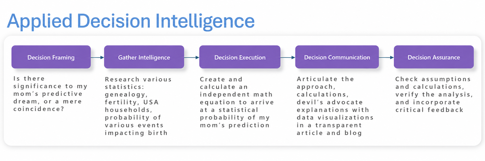

Chapter 1I
Applying the Decision Intelligence Framework
An end-to-end example that brings the framework components together.
 Decision Intelligence – Applying the Decision Intelligence Framework
Decision Intelligence – Applying the Decision Intelligence Framework
Coming to a Conclusion using the Decision Intelligence Framework¶
Now it is time to see an end-to-end decision scenario implemented using the full Decision Intelligence Framework and not just the individual components.
In 2017, a few months before my mother passed away, my mom had a dream that in the near future my wife and I would have a family consisting of three daughters. I thought this dream prediction is an interesting study on "predictive life events". The conclusion (decision) I want to arrive at is:
How special was my mom's predictive dream about my family having three daughters?.
Using the Decision Intelligence Framework, the steps used are illustrated below.
